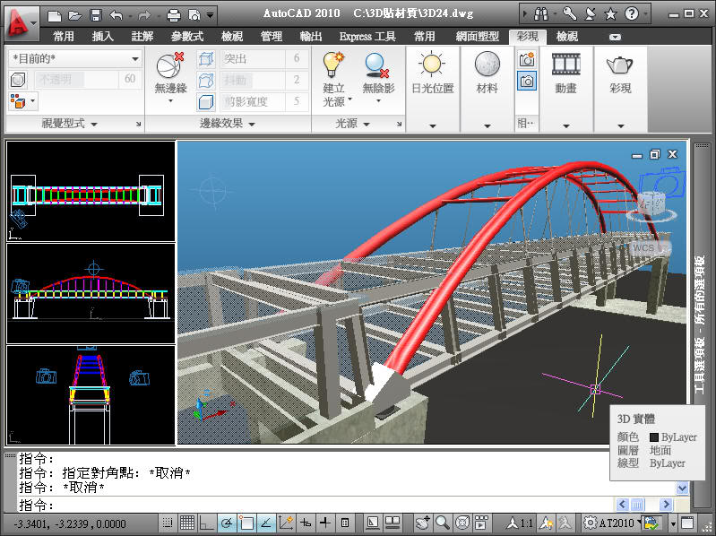
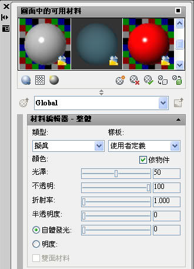
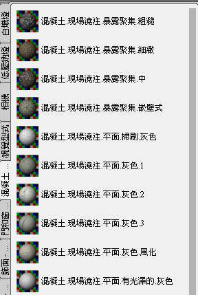
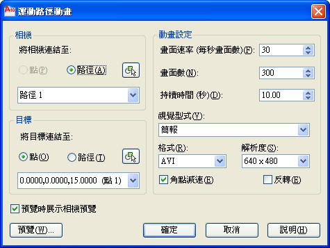

最近開始接觸 AutoCAD 2010版本 的3D貼材質及彩現功能，這算是我的第一個貼材質的作品，以下是我的心得請大家多多指教~

在建模方面這座鋼構拱橋其實是對稱的，所以並沒有花太多時間，比較多的時間是在調燈光及設定視景，材質我是使用內建的材質庫，2010版有非常多的材料供USER運用，我也算是還在摸索啦~


像以下的動畫(10秒)使用簡報等級就算了5個鐘頭，真的事出乎我的預料之外，現在慢慢了解跑3D圖時電腦設備很重要!!

模型使用3個點光源加上開啟日光，背景使用簡單的漸層，很多細微的設定也還不懂得設置，但是知道當參數的修改對於RENDER的結果都有很大的變化，這部分真的需要時間及經驗的累積才能一次到位，有興趣的朋友可以多多練習，很多參數都給他改看看再跑看看，但是需要花很多時間就是了!